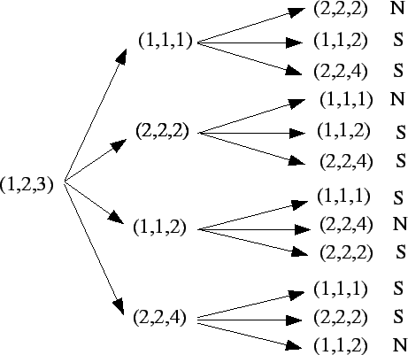

1)
Considere a família de vetores de

1.a)
Estude se os vetores da família  são linearmente independentes.
são linearmente independentes.
1.b)
Determine todas as bases de
 formadas por vetores diferentes
que podem ser obtidas
usando os vetores de
formadas por vetores diferentes
que podem ser obtidas
usando os vetores de  (isto é, bases formadas pelos mesmos vetores em ordem diferente
contam como a mesma, ou seja,
as bases
e
(isto é, bases formadas pelos mesmos vetores em ordem diferente
contam como a mesma, ou seja,
as bases
e  contam uma única
vez).
contam uma única
vez).
Considere agora a família de vetores de

1.c)
Veja que  é uma base de
é uma base de
 .
.
1.d)
Determine as coordenadas do vetor (3,6,5) na base  .
.
1.e)
Considere agora o vetor w que na base  tem coordenadas
tem coordenadas
 (isto é,
(isto é,
 .
Determine as coordenadas de w na base canônica.
.
Determine as coordenadas de w na base canônica.
1.f)
Considere agora os vetores w1, w2 e w3 que na base  têm coordenadas
têm coordenadas
Resposta:
item (a): Os vetores da família
 não são l.i.: um conjunto com mais de três
vetores de
não são l.i.: um conjunto com mais de três
vetores de
 nunca é l.i. (o maior número de
vetores l.i. em
nunca é l.i. (o maior número de
vetores l.i. em
 é três).
é três).
V. também pode obter explicitamente combinações lineares
não trivias cujo resultado é o vetor nulo. Por exemplo:
item (b): Observe que uma base de
 não pode conter simultaneamente os vetores
(1,1,2) e (2,2,4), pois
,
e, portanto,
toda família de vetores contendo (1,1,2) e (2,2,4) é
l.d..
não pode conter simultaneamente os vetores
(1,1,2) e (2,2,4), pois
,
e, portanto,
toda família de vetores contendo (1,1,2) e (2,2,4) é
l.d..
Similarmente, uma base de
 não pode conter
simultaneamente os vetores (1,1,1) e (2,2,2), pois
não pode conter
simultaneamente os vetores (1,1,1) e (2,2,2), pois
 ,
e, portanto, toda família de vetores
contendo (1,1,1) e (2,2,2) é l.d..
,
e, portanto, toda família de vetores
contendo (1,1,1) e (2,2,2) é l.d..
Feitas estas observações, construiremos as bases possíveis, lembrando antes que uma base de
 está
formada por três vetores l.i.
está
formada por três vetores l.i.
Consideremos agora as bases que contém o vetor (2,2,2). Como os vetores (2,2,2) e (1,1,2) não são paralelos podem formar parte de uma base. Similarmente, os vetores (2,2,2) e (2,2,4) podem formar parte da mesma base.
Pelos comentários já feitos,
Observe que conferir que os vetores de  e
e  são
l.i. é o mesmo (os determinante cujas linhas são os vetores
são um múltiplo do outro). Para ver que são l.i.,
são
l.i. é o mesmo (os determinante cujas linhas são os vetores
são um múltiplo do outro). Para ver que são l.i.,
Consideremos agora as bases que contém o vetor (1,1,1). Como os vetores (1,1,1) e (1,1,2) não são paralelos podem formar parte de uma base. Similarmente, os vetores (1,1,1) e (2,2,4) podem formar parte da mesma base. Como no caso anterior,
De fato já obtivemos todas as bases possíveis. Se
consideramos agora as bases contendo (2,2,4) obteremos bases com
os mesmos vetores que  e .
Se consideramos agora
as bases contendo (1,1,2) obteremos bases com os mesmos vetores
que
e .
Se consideramos agora
as bases contendo (1,1,2) obteremos bases com os mesmos vetores
que  e
e  .
Finalmente, toda base deve
necessariamente conter o vetor (1,2,3): isto é decorre
dos vetores (1,1,1), (2,2,2), (1,1,2) e (2,2,2) serem
coplanares, todos estão no plano x-y=0, que não contém
o vetor (1,2,3).
.
Finalmente, toda base deve
necessariamente conter o vetor (1,2,3): isto é decorre
dos vetores (1,1,1), (2,2,2), (1,1,2) e (2,2,2) serem
coplanares, todos estão no plano x-y=0, que não contém
o vetor (1,2,3).
V. poderia fazer de outra forma. Primeiro observar que os
vetores (1,1,1), (2,2,2), (1,1,2) e (2,2,4) são
coplanares (todos estão no plano
)
portanto, como o vetor (1,2,3) não pertence ao plano  ,
necessariamente deve formar parte das bases.
Fazendo uma árvore, obtemos
,
necessariamente deve formar parte das bases.
Fazendo uma árvore, obtemos
(1,1,1)(1,1,1) (2,2,2)(2,2,2) (2,2,4)(2,2,4) (1,1,2)(1,1,2) (1,2,3)(1,2,3) NNão é base SPode ser base  |
Observe que v. obtem oito bases, mas somente quatro com vetores diferentes.
item (c): É suficiente ver que os
vetores são l.i., ou seja que seu produto misto é não nulo.
Temos
item (d): Devemos escrever
item (e): Temos que
item (f): Para ver que os vetores
formam uma base é suficiente ver que são l.i., ou seja, que
a única combinação linear destes vetores que fornece o
vetor nulo é a trivial (todos os coeficientes iguais a zero).
Suponhamos que
2)
Considere o vetor u=(1,1,1) e a transformação linear
definida como
Resposta:
Para o item (a).
Temos
Param o item (b), observe que, da forma geral de T temos,
Para resolver (c). Sem fazer cálculos, considere um vetor não nulo w perpendicular a u=(1,1,1). Então T(w) é não nulo e perpendicular a w e a u. Agora, T2(w) é perpendicular a T(w) e u, logo T2(w) é não nulo e perpendicular a T(w), logo .
A resposta ao último item é negativa: se teremos (necessariamente) T(v) ortogonal a u. Logo e o módulo de T2(v) é , que sempre será não nulo se T(v) é não nulo. Ou seja, T2(v) é nulo se, e somente se, .
Outra forma é fazer as contas. Veja que
3)
Dados o plano
e o vetor w=(1,1,1),
considere a transformação linear M definida
como segue,
dado um ponto P=(x,y,z) considere o vetor
 e defina
e defina
pi rr
ww
v=OP
rr
ww
v=OP
 PP
QQ
OO
vv
TT
M(v)M(v)
L(v)L(v)
PP
QQ
OO
vv
TT
M(v)M(v)
L(v)L(v)
![\includegraphics[height=2.5in]{fig3.eps}](img55.gif)
Resposta: Para determinar as matrizes de M e de L procederemos de duas formas diferentes.
Primeiro, observe que dado um vetor de coordenadas v=(x,y,z) o
vetor M(x,y,z) tem como coordenadas a interseção do plano
x-y+z=0 e da reta
(x+t, y+t,z+t). Esta interseção ocorre
quando
Em resumo,
Outra forma de determinar M e L é considerar a seguinte base
de
 :
.
Por definição,
:
.
Por definição,
Finalmente, para o item (d). Temos que M não é injetora,
pois
M(1,1,1)=(0,0,0). Portanto, não possui inversa. V.
também pode ver que seu determinante é nulo:
V. pode também calcular o determinante de L, que é -1.
Logo possui inversa. E pode calcular a inversa pelo método de
Gauss.